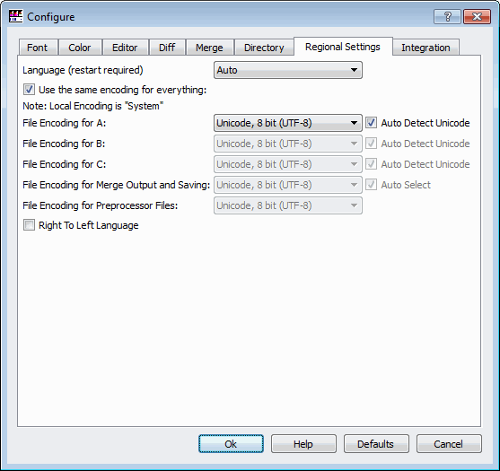

Handy free tools¶
TortoiseSVN¶
The Tesseract-OCR source lives in an SVN repository at Google Code, so to build the latest versions you’ll need to know SVN. For newcomers (or not), TortoiseSVN (http://tortoisesvn.net/) is a great alternative to the SVN command line interface.
“TortoiseSVN is an easy-to-use SCM / source control software for Microsoft Windows and possibly the best standalone Apache Subversion client there is. It is implemented as a Windows shell extension, which makes it integrate seamlessly into the Windows explorer. Since it’s not an integration for a specific IDE you can use it with whatever development tools you like.”
JP Software TCC/LE¶
Instead of using Windows’ plain old Command Prompt window — and less intimidating than using the bash shell from cygwin or MSYS — the “TCC/LE - Windows CMD Replacement Command Console” by JP Software is definitely worth trying. It is available at http://jpsoft.com/tccle_cmd_replacement.html.
For example, to look for all the settable options in Tesseract-OCR, try:
C:\BuildFolder\tesseract-3.02\
ffind /s/v/c/t"_MEMBER" *.cpp | list/s
and you’ll get something that looks like this in the list viewer:
---- C:\BuildFolder\tesseract-3.02\ccmain\tesseractclass.cpp
: BOOL_MEMBER(tessedit_resegment_from_boxes, false,
BOOL_MEMBER(tessedit_resegment_from_line_boxes, false,
BOOL_MEMBER(tessedit_train_from_boxes, false,
BOOL_MEMBER(tessedit_make_boxes_from_boxes, false,
BOOL_MEMBER(tessedit_dump_pageseg_images, false,
...
double_MEMBER(segsearch_max_char_wh_ratio, 2.0,
double_MEMBER(segsearch_max_fixed_pitch_char_wh_ratio, 2.0,
BOOL_MEMBER(save_alt_choices, false,
413 lines in 7 files
(Press the Escape key to exit the list viewer).
The equivalent(?) Linux incantation, copied and slightly modified from the grep info, is:
find . -name '*.cpp' -print0 | xargs -0r grep -H '_MEMBER' | less
Note: You can also do this directly in Visual Studio 2008, by choosing Edit ‣ Find and Replace ‣ Find in Files (Ctrl+Shift+F), so maybe this wasn’t the best example:

Cygwin¶
“Cygwin is a collection of tools which provide a Linux look and feel environment for Windows.”
Leptonica actually still requires a few unix utilities (like rm, diff, sleep) for some operations and might silently fail if it they not present (as of v1.68). The easiest way to deal with this is to install Cygwin or MSYS (see the next section).
MSYS¶
“MSYS is a collection of GNU utilities such as bash, make, gawk and grep to allow building of applications and programs which depend on traditionally UNIX tools to be present. It is intended to supplement MinGW and the deficiencies of the cmd shell.”
WinDiff¶
An important phase of testing tesseract is checking how its output compares to previous runs (or ground-truth files). A visual diff program can make that easier.
Microsoft’s WinDiff doesn’t seem to come with Visual Studio anymore. However it can still be downloaded from Grig Software (without having to get all the other stuff in the Windows XP Service Pack 2 Support Tools.
Other options are KDiff3 and ExamDiff (ExamDiff Pro is also recommended but it’s not free).
KDiff3 doesn’t seem to correctly auto-detect UTF-8 encodings so choose Settings ‣ Configure KDiff3... from the menubar and set the Regional Settings tab as follows:
Also on the Integration tab, make sure that Quit also via Escape key is turned on (checked). Since IrfanView also quits when you press the Esc key, this just makes it easy to dismiss both applications with the same key.
Here is KDiff3 showing the (slight) difference in OCR results after deskewing a grayscale image:

IrfanView¶
You need some program to view the images you are trying to OCR and since Leptonica uses IrfanView (http://www.irfanview.com/) to automatically display images, you might as well use it also.
“IrfanView is a very fast, small, compact and innovative FREEWARE (for non-commercial use) graphic viewer for Windows 9x, ME, NT, 2000, XP, Vista, Windows 7.”
Pressing the I key while viewing an image with IrfanView, will bring up a dialog box that shows most of its important properties (like bits/pixel and DPI).
Aware Systems AsTiffTagViewer¶
This utility, available at http://www.awaresystems.be/imaging/tiff/astifftagviewer.html, let’s you easily determine TIFF image file properties.
“Whenever a customer reports your software doesn’t handle this or that particular TIFF, use AsTiffTagViewer and discover why.”
Dependency Walker¶
If you’re having problems with missing module runtime errors, the Dependency Walker (http://dependencywalker.com/) usually can help track down the problem.
“Dependency Walker is also very useful for troubleshooting system errors related to loading and executing modules. Dependency Walker detects many common application problems such as missing modules, invalid modules, import/export mismatches, circular dependency errors, mismatched machine types of modules, and module initialization failures.”
You probably want the 32-bit version even if you are running on a Windows 64-bit platform, because the current VS2008 Solution for Tesseract-OCR by default builds a 32-bit app. From the FAQ
“There are 32-bit and 64-bit versions Dependency Walker. All versions are capable or opening 32-bit and 64-bit modules. However, there are major advantages to using the 32-bit Dependency Walker to process 32-bit modules and the 64-bit Dependency Walker to process 64-bit modules. This is especially true when running on a 64-bit version of Windows, which allows execution of both 32-bit and 64-bit programs. The 32-bit subsystem on 64-bit Windows (known as “WOW64”) has its own private registry, “AppPaths”, “KnownDlls”, system folders, and manifest processing. Only the 32-bit version of Dependency Walker can access this 32-bit environment, which is needed to accurately process a 32-bit module. Likewise, only the 64-bit version of Dependency Walker can fully access the 64-bit environment, so it should always be used for processing 64-bit modules.”
{kind=link}
The above image shows Dependency Walker used on tesseract-dlld.exe. The panes show the DLLs that it is dependent on, the methods it actually uses from libtesseract302d.dll, and all the exported methods from libtesseract302d.dll. Using this it’s easy to see that only the TessBaseAPI and STRING classes are exported as mentioned in Programming with libtesseract.
Sysinternals Process Explorer¶
Another essential program to help figure out what your program is doing is Process Explorer (http://technet.microsoft.com/en-us/sysinternals/bb896653).
“The unique capabilities of Process Explorer make it useful for tracking down DLL-version problems or handle leaks, and provide insight into the way Windows and applications work.”
VMware Player¶
VMware Player (http://www.vmware.com/products/player/) can be used to install, for example, Ubuntu 11.10 in a virtual machine on Windows and see how the other half lives. It also helps when trying to figure out if the Windows version of tesseract acts the same way as the “original” version.
“VMware Player is the easiest way to run multiple operating systems at the same time on your PC. With its user-friendly interface, VMware Player makes it effortless for anyone to try out Windows 8 developer release, Windows 7, Chrome OS or the latest Linux releases, or create isolated virtual machines to safely test new software and surf the Web.”